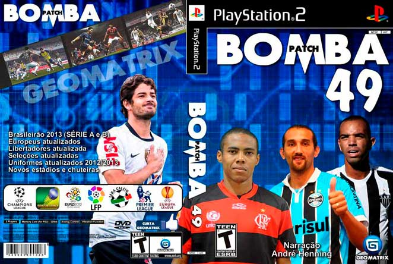

gbh//
O que você quer saber sobre mim?
Meu nome é Gabriel Bulmini Herter, nasci em 17 de março de 2006, na cidade de Palmeira das Missões, no Rio Grande do Sul.
Fiz toda minha formação escolar no Instituto Estadual de Educação Borges do Canto e foi a partir do ensino medio que meu interesse por tecnologia cresceu mais ainda.
Desde criança fui muito conectado com a tecnologia, jogando e mexendo em computadores desde pequeno, o que gerou um grande interesse em como aquilo funcionava.
Então, quando estava no 2º ano do ensino medio, começou as perguntas, "O que você vai fazer da vida?", de primeira sempre me veio a parte da tecnologia, foi isso que escolhi.
Desde então fiz varios cursos nesta area até me formar na escola, e atualmente estou cursando Tecnologo em Analise em Desenvolvimento de Sistemas na Universidade de Passo Fundo, pretendo me formar em 2027 e fazer uma pós-graduação e seguir carreira.
Videogames
Meu primeiro jogo
Minha primeira conexão com jogos foi muito cedo, aos 7 anos ganhei um PlayStation 2 do meu pai.
Junto com ele, meu primeiro jogo, Bomba Patch, uma modificação muito famosa aqui no Brasil do jogo de futebol PES 6.
Atualmente
Hoje em dia não tenho um jogo fixo, gosto muito de jogar com meus amigos no fim de semana.
Então, o que eles estiverem jogando, eu jogo também,
Jogos como Counter Strike, FIFA, Valorant, Rainbow Six Siege, Call of Duty.
Linguagem de marcação
HTML5
É uma linguagem de marcação que serve para desenvolvimento de sites e aplicações web, faz uso de tags para manter os códigos organizados e estruturados.

Linguagem de estilização
CSS3
CSS é chamado de linguagem Cascading Style Sheet e é usado para estilizar elementos escritos em uma linguagem de marcação como HTML.

Linguagem de programação
JavaScript
JavaScript é uma linguagem de programação interpretada estruturada, de script em alto nível com tipagem dinâmica fraca e multiparadigma.